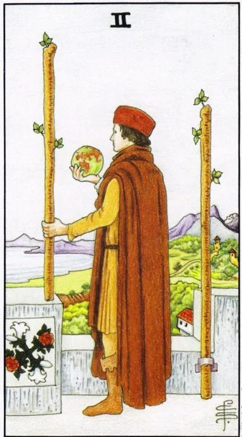

Minor Arcana · Wands
IITwo of Wands
The strategist’s pause before the hike: a world in the palm of your hand, a distant horizon, and a choice of direction that will determine everything.
Archetype and core meaning
A man stands on a fortress wall with a globe in his hand, looking out at the sea, behind the solid walls of the built past, ahead of us is an open space of possibility: one staff is still fixed in the wall, the other is free, two wands catch a moment of choice between them.
It's the lap of personal power: a lot has been achieved, but you don't want to stop, and the only question is where to put your power next, and the card teaches that the real choice is to rise above the hustle and bustle and honestly answer yourself what horizon you really need.
Daily life
A day for strategy, not a leap: budget for the year, plan your trip, talk to your loved ones about your season plans, and it's a good time to have a distance and a heart-to-heart conversation, and make important decisions without leaving them to others.
Work and career
Now, the current phase is over, the next one hasn't started yet: the deal is closed, the report is done, and it's a development issue, the card favors business plans, entry into new markets, talk about promotion, positions are strong, partners are trusting, agreements are being made that will last for a long time.
Relationships
The first fire has settled, and the couple decides whether to build a common house: talk about marriage, apartment, moving. The single card hints that it is time to leave the fortress - the old defenses are already redundant, and a new person is waiting where you have long looked.
Health
Stable is the best background for prevention: medical examinations, exercise plans, nutrition with a specialist. The card highlights the power of habits: what you lay down now will reverberate in years to come. Endurance sports, running, tourism are beneficial.
Spiritual meaning
The two wands are the tower watcher: the ability to see destiny beyond momentary desires, and it's about the art of foresight and timing: whoever holds the globe owns the calendar, and the card reinforces the rites of success.
Fear of stepping behind a wall: the decision is postponed, plans are poured in, and the comfort zone turns into a cage.
Archetype and core meaning
The Inverted Two is a man who has looked out at the sea for so long that he has forgotten why he went out on the wall. Every option seems risky, the globe in his hand turns into a heavy load. There are enough opportunities - not enough courage to dispose of them.
The other side is hectic planning without foundation: multiple goals at once, castles in the air, things started without a calculation of forces, both of which grow from the same root: the unwillingness to look honestly at real resources and real desires.
Daily life
Small decisions eat up the day: you pick a fare, a route, a gift, and you stick with it, and you get your plans crumbling with other people's cancellations and forgotten details, and you get a viscous sense that life is passing by, and you make a small decision and you get it done, and that's enough to get you started.
Work and career
The project stalls because no one wants to take responsibility: meetings multiply, strategies are rewritten, deadlines are floating, you may be held up with promises of promotion, or you are afraid to leave a reliable company, check the facts: half of the "risks" live only in your head.
Relationships
The relationship is in limbo, both fearful of talking about the future and secretly checking backup options. Sometimes the card shows a person who, out of fear of loneliness, guards something that is long overdue to let go. Ask yourself honestly: are you building a common or guarding your own?
Health
The tension of indecision hits the nerves: sleep is shallow, muscles are pinched, anxiety is kept in the background all day, the body is waiting for a blow that is not there. Mode and grounding help: a stable schedule of sleep and eating will quickly convince the body that change is safe.
Spiritual meaning
In the subtler sense, there is a fog on the observation deck: the practitioner confuses his path with the imposed, follows the predictions and fears of others, warns against fortune-telling out of fear and dependence on "teachers," silence and self-will are more accurate than any advice.
🌿 How the school reads this rank
The main idea
One desire is no longer enough: the second one comes along. One remains a pillar, the other moves, and hence the choice, the plans, and the need to accommodate the other's desire.
How it manifests
In work, listening to the client and tailoring the offer to the client, in relationships, learning to see more than just your own desire, in self-development, making plans while maintaining your basic direction.
The shadow side
People get lost between options and do not understand what they want.
Keywords
Two desires · choice · plans · adjustment · dreams
📜 In detail — from the rank lecture
Essence of the card
Two desires instead of one ace potency: one desire is nailed with a metal brace to your home base, the other is mobile — wands are fire, "a constant desire for something to happen." The hero looks at the globe — plans a trip.
Upright position
- Social/work: Accepting the customer's desire — you sell red handbags, the customer asks for a brown or pearl buttoned robe: adjust and look for the right product. There is no consensus yet — bargaining for the next arcana.
- Finance: Direct – desire coincides with opportunities; inverted – “the money is enough for a giguli, and you want a Maybach”: dreams are at odds with reality.
- Relationships: He wants Georgian food, his partner wants Japanese food, the choice is to win him over or to go over to his side, the challenge is to "develop the ability to take sides, to feel the desire of others."
- Self-development: dreams and plans for the future (“take a card and plan a route”), but remembering your basic desire is “not all for the customer.”
Negative meaning
• throwing, “tormented by the uncertainty of my desires” (“I want to go somewhere... where I don’t know”); painful recognition of the second point of view.
School emphases and distinctive points
- Junior arcana are disassembled by fours; each next arcana “unfolds” the feeling of the elements.
- Author's historical excavations of images: the red cap of a sailor; chocanje and brewderscape from the poisons of antiquity; dark pitfalls of swords are painted intentionally - "if you look well at least 100 years ago."
- Didactic models: card of the day; ice cream as a model of a straight / inverted card; pentacle bicycle; lemniscata-uroboros; the second coin of any situation.
- Kabbalah/Sfirot does not use at all (“you need to be a little Jewish”), numerology is discarded; astrology is mentioned only as a help to read the client – there is no own astrological binding of doubles in the lecture.
- Practice of alignments: you can do it yourself, "if you do it well"; kickbacks are not mysticism, but immersion in the client's emotions (work with the investigators on hangings in Brest); reset rituals are individual - he was able to wash his hands / face. Cards do not get tired and do not lie - a person gets tired.
- Modern series and humor: pitching after the placer, exchange rates and real estate, Maybach vs. Zhiguly, "such things are pies", "elk on corn".
- Positioning: theory is freely available, practice is in small groups (~7 people, 40 two-hour lectures, course ~300 euros with an increase to ~400): “Practice is my personal experience, which I have the right to monetize.”
Keywords
Two desires; home base; customize to the client’s desire; plans and travel; dreams versus opportunities.